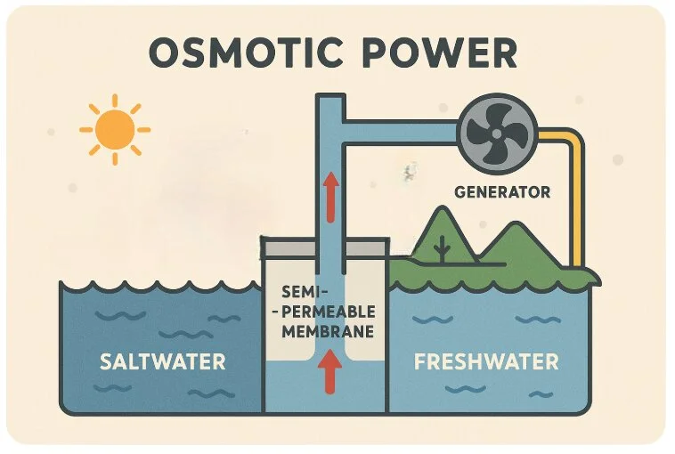
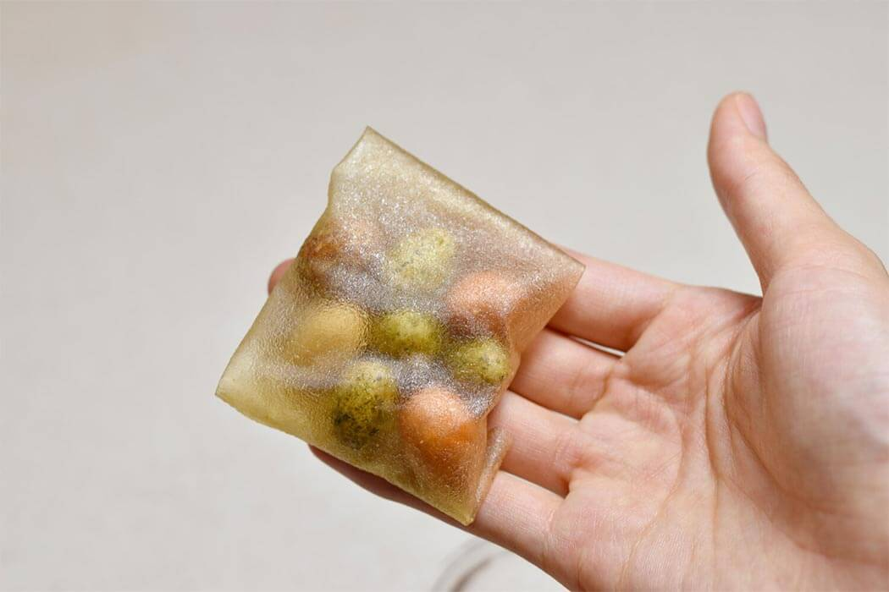

Some Important Inventions
With the passage of time, new kind of inventions have made their way into the human society and it is important that we are aware of it. Below are some of these inventions:
Structural Battery Composites

Engineers have begun integrating energy storage directly into physical structures. By turning the carbon fiber body of electric vehicles or the walls of green buildings into functional battery storage, weight is dramatically reduced while energy density maximizes.
Osmotic Salinity Power

A massive leap forward for baseload clean energy. These systems utilize specialized semi-permeable membranes to harvest steady, clean electricity from the natural chemical pressure difference where fresh river water meets salty ocean water
Advanced Modular Fission

Small Modular Reactors (SMRs) are scaling down nuclear power into safer, cheaper, factory-assembled units. These modules utilize advanced cooling loops to provide micro-grid zero-emission baseline energy alongside surging renewable configurations.
Mycelium Insulation Blocks

Leading biotech ventures like Mykor are growing high-performance construction materials out of structural fungi networks fed on agricultural residue. These naturally flame-resistant blocks replace carbon-intensive polyurethane insulation foams.
Seaweed Plastic Disruption

Material design houses like Notpla have successfully scaled biodegradable packaging sheets and edible food membranes. Made entirely from sustainably cultivated kelp, they naturally dissolve and compost completely within weeks without generating harmful microplastics.